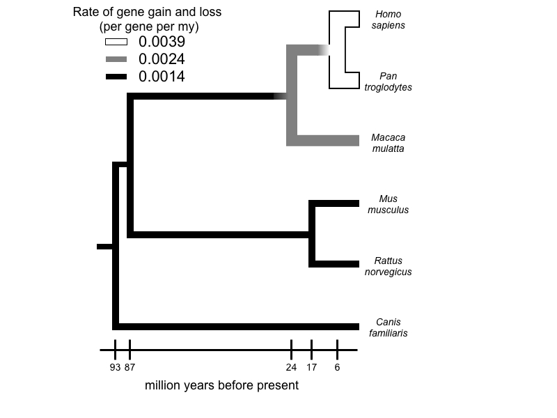
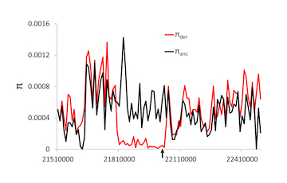
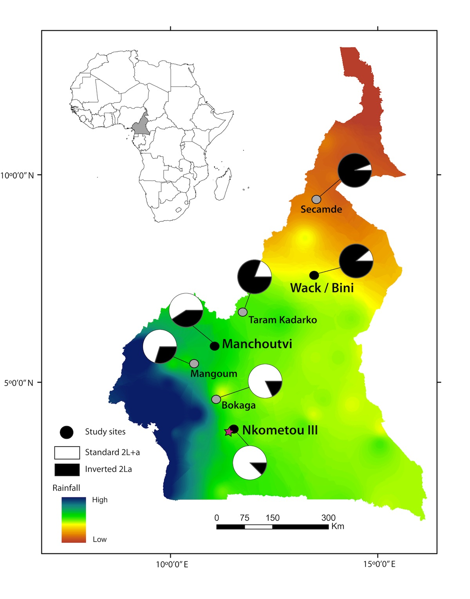
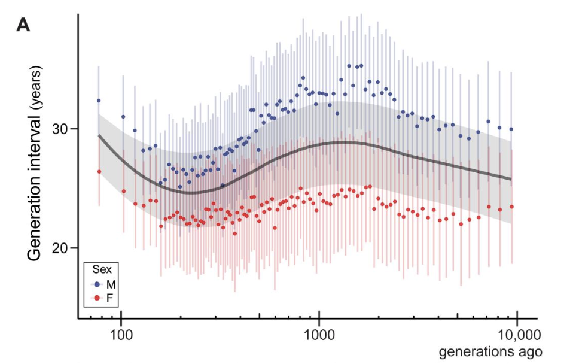

Our work focuses broadly on asking questions about organismal function and evolution using genomic data. The huge amount of data currently being produced allows us to ask and answer questions on a genomic scale that have never been possible before. Our questions largely revolve around the relative roles of natural selection and genetic drift in shaping nucleotide, gene family, and gene expression variation both within and between species. Although most of the empirical work has been on systems such as humans, flies, mosquitoes, and tomatoes, members of the lab can work on topics and organisms that appeal to them. This page covers several major topics currently being studied.
The evolution of gene gain and loss
Comparison of whole genomes has revealed large and frequent changes in the size of gene families, the result of gene duplication and loss. Comparative genomic analyses allow us to identify large-scale patterns of change and to make inferences regarding the role of natural selection in gene gain and loss. To make these analyses possible, we have developed a stochastic birth-and-death model for gene family evolution, applied in the software package, CAFE. Application of this method to data from multiple whole genomes of many groups is revealing remarkable patterns of gene gain and loss. Other approaches to studying this question have involved the analysis of gene movement among chromosomes (especially sex chromosomes), the discovery of polymorphic copy-number variants under local selection, and even new methods for carrying out genome assembly to more accurately estimate gene number.
Population genomics
Selective, demographic, and random processes all determine the frequency of alleles in a population and differences between species. One of the major goals of population genetics has been to uncover which of these processes is acting in natural populations through a combination of directed empirical studies and theoretical models that provide expectations under a variety of conditions. While most of the work in the field has involved single loci or limited multiple locus studies and models, the availability of genomic-scale data will begin to require new genomic-scale approaches. We have been pursuing these questions in a wide variety of studies, largely focused on humans and flies (where the best data have always been). The work has presented new methods for distinguishing demography from selection, distinguishing different forms of positive selection, and more recently, using clinal variation to uncover local adaptation.
Speciation genomics
Population genomic data are being applied in new and creative ways to recently diverged lineages. One of the goals of the new field of speciation genomics is to understand how the patterns of divergence uncovered by such studies are related to mechanisms of reproductive isolation. Focusing on divergence within the Anopheles gambiae species complex, we have been interested in the roles of introgression and selection in shaping heterogeneous patterns of divergence. This work has built on much of our more general research into population genomics, but also now encompasses new approaches to detecting introgression and to distinguishing differences in introgression among loci from differences in selection among loci.
The evolution of mutation rates
Parents leave many mutations to their offspring, but this number differs among species and between the sexes. Using pedigree-based studies of mutation rates across mammals, our work has focused on explaining the evolution of this complex trait. We have found that variation in the mutation rate among species is largely driven by generation time: longer-lived organisms pass on more mutations. Our newer on the difference between the sexes attempts to determine the developmental and molecular mechanisms underlying male-mutation bias.



